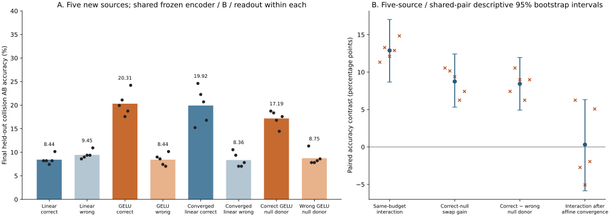

正确关系收益和预测零空间分量的功能迁移得到新源复核。同损失充分拟合后，线性组恢复大部分关系收益；未确认额外的功能表达能力优势。本轮按预定结束标准收口。
完成五个从头训练的来源、二十组固定预算模型和二十个同损失凸求解。种子均提前固定，没有替换失败种子或追加条件。所有源单步门槛与所有收敛证书均通过。新测试有 512 个整组轨道，排除过去已查看的 2,688 个测试轨道。历史输入可以出现在本轮新模型的训练集，未声称全历史训练输入新颖。

| 条件 | 碰撞 AB | 配对双正确 | 单步 A | 第一状态 NMSE |
|---|---|---|---|---|
| 同预算线性正确 | 8.44% | 0.47% | 100.00% | 0.04647 |
| 同预算线性错配 | 9.45% | 0.31% | 100.00% | 0.06859 |
| 同预算 GELU 正确 | 20.31% | 5.00% | 100.00% | 0.01973 |
| 同预算 GELU 错配 | 8.44% | 1.09% | 100.00% | 0.06874 |
| 充分拟合线性正确 | 19.92% | 3.75% | 99.84% | 0.02963 |
| 充分拟合线性错配 | 8.36% | 0.31% | 99.77% | 0.08200 |
| 线性读出＋正确 GELU 零空间 | 17.19% | 2.66% | 100.00% | 0.03744 |
| 线性读出＋错配 GELU 零空间 | 8.75% | 0.47% | 100.00% | 0.06818 |
| GELU 读出＋线性零空间 | 13.20% | 1.56% | 100.00% | 0.02876 |
| 对比 | 均值 [描述性 95% 区间] pp | 五源效应 pp |
|---|---|---|
| gelu_relation_advantage | +11.88 [+8.05, +15.62] | +10.94, +12.50, +10.16, +11.72, +14.06 |
| linear_relation_advantage | -1.02 [-3.75, +1.80] | -0.39, -0.78, -1.95, -1.17, -0.78 |
| same_budget_interaction | +12.89 [+8.67, +17.03] | +11.33, +13.28, +12.11, +12.89, +14.84 |
| correct_null_swap_gain | +8.75 [+5.31, +12.42] | +10.55, +10.16, +9.38, +6.25, +7.42 |
| correct_vs_wrong_null_donor | +8.44 [+4.92, +11.95] | +7.42, +10.55, +8.98, +6.25, +8.98 |
| wrong_null_swap_gain | +0.31 [-2.73, +3.44] | +3.12, -0.39, +0.39, +0.00, -1.56 |
| remove_correct_gelu_null | +7.11 [+3.75, +10.55] | +6.25, +6.64, +7.03, +7.03, +8.59 |
| converged_linear_relation_advantage | +11.56 [+6.56, +16.80] | +4.69, +15.23, +15.23, +13.67, +8.98 |
| remaining_relation_interaction | +0.31 [-5.86, +6.33] | +6.25, -2.73, -5.08, -1.95, +5.08 |
| converged_linear_vs_gelu | -0.39 [-6.09, +5.08] | -4.69, +3.52, +4.69, +1.95, -7.42 |
| linear_optimization_gain | +11.48 [+6.56, +16.56] | +7.03, +16.41, +14.84, +12.50, +6.64 |
正确零空间供体增量为 +8.75 [+5.31, +12.42] pp；正确与错配供体之间为 +8.44 [+4.92, +11.95] pp。替换只使用各自预测的表征，第一步全部 logits 最大变化 2.23e-13，概率最大变化 1.19e-14，分类均保持。
四组第一算子统一使用零权重衰减，是训练前登记的调整，以便同预算训练与直接仿射求解具有相同的蒸馏＋0.25 归一化状态误差目标。编码器与第二算子始终冻结。充分拟合改变参数化、计算精度和预算，没有更换函数族、几何权重、输出监督或正则目标。没有复合标签／状态进入拟合；两种求解起点均预先固定。
| 源种子 | 配对 | 条件数 | 系数范数 | 最大独立 gap 上界 | 两起点目标差 |
|---|---|---|---|---|---|
| 17291 | correct | 9.68e+07 | 1.27e+06 | 1.67e-12 | 3.29e-13 |
| 17291 | wrong | 9.68e+07 | 1.43e+06 | 9.99e-13 | 3.37e-14 |
| 18401 | correct | 1.21e+08 | 8.01e+05 | 1.25e-12 | 1.57e-13 |
| 18401 | wrong | 1.21e+08 | 1.26e+06 | 2.56e-12 | 2.9e-14 |
| 19507 | correct | 9.77e+07 | 8.49e+05 | 8.09e-13 | 2.31e-13 |
| 19507 | wrong | 9.77e+07 | 1.55e+06 | 3.87e-12 | 1.7e-13 |
| 20611 | correct | 1.29e+08 | 1.55e+06 | 2.18e-12 | 6.3e-14 |
| 20611 | wrong | 1.29e+08 | 1.69e+06 | 9.67e-13 | 2.13e-14 |
| 21713 | correct | 8.65e+07 | 8.22e+05 | 3.46e-12 | 7.38e-14 |
| 21713 | wrong | 8.65e+07 | 1.29e+06 | 7.56e-13 | 2.78e-14 |
| 充分拟合配对 | float64 AB | float32 AB | 改变的预测数 / 1280 |
|---|---|---|---|
| correct | 19.92% | 19.92% | 12 |
| wrong | 8.36% | 8.44% | 43 |
两起点在测试上不同复合预测总数为 0；最大第一状态差 6.55e-05。独立解析梯度复算的最大训练最优性误差上界为 3.87e-12。系数仍可能很大，最优性证书不保证所有扰动或所有输入上的数值稳定。
当前冻结模型上的关系特异收益能由第一步读出零空间中的预测信息传递，并且线性优化充分程度影响能否利用这些信息。不能把贡献拆为优化、数值条件和表达能力的精确百分比；未能确认充分拟合后额外的功能表达优势。区间跨零不表示线性与 GELU 等价。状态拟合差距、五源有限性、单一矩阵系统以及混合状态可能偏离编码器流形，均进入论文局限。
三真答案碰撞上限只适用于由三个答案确定的编码，完整隐藏状态和输出概率分布不受该上限限制。零空间保持的是固定线性第一读出，不移除全部答案信息。所有实验都提供操作及对应关系，不能证明普通训练自发发现代数，也不能证明普遍的输出独立机制。各项预定假设分别报告，bootstrap 区间没有做多重检验校正，不以单个区间替代全部证据。
20,591 项独立检查通过；212 项此前产物保持。174 passed in 5.02s。